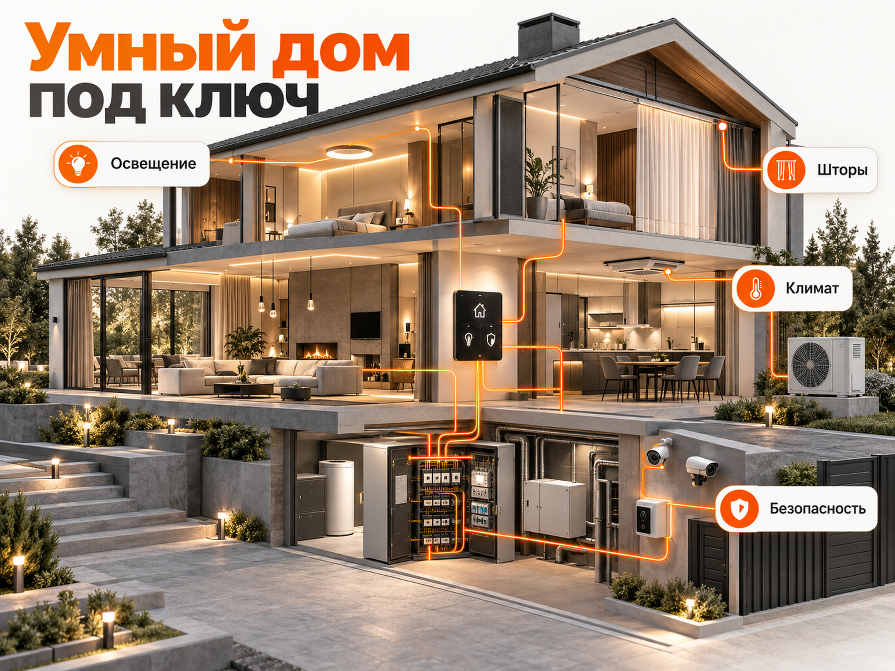
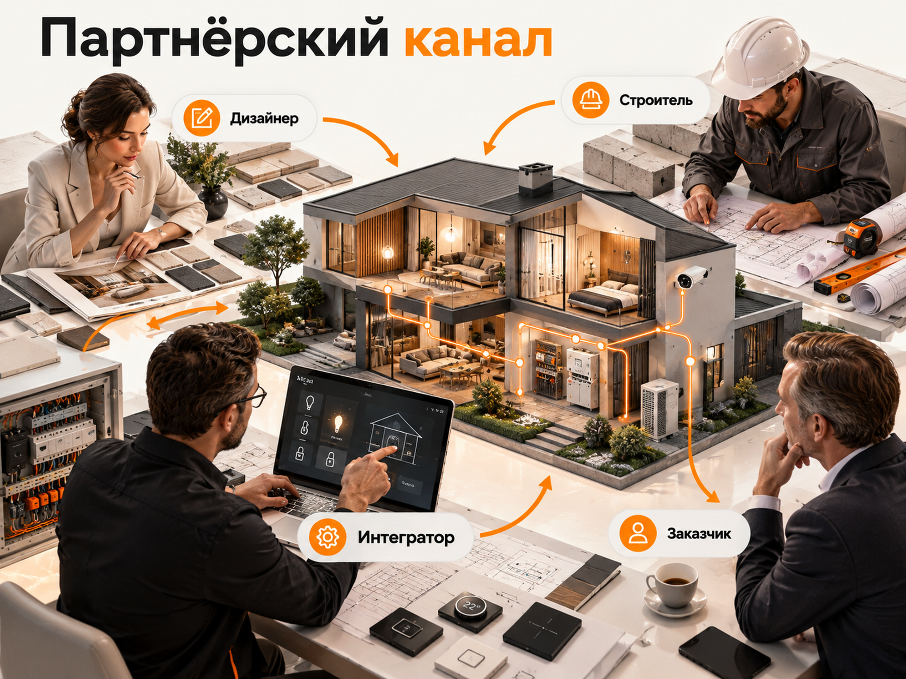

Блог о платном трафике
Продвижение умного дома под ключ: где искать клиентов и сколько стоит реклама
Для продвижения премиальных систем умного дома я бы в первую очередь использовал Яндекс Директ, а в качестве дополнительных направлений рассматривал Авито и сотрудничество с дизайнерами, архитекторами и строительными компаниями. Реклама во ВКонтакте и Telegram здесь имеет более узкие задачи и не должна автоматически получать часть бюджета.
Речь о комплексной автоматизации дорогих квартир, загородных домов, офисов и коммерческих объектов. Интегратор проектирует систему, подбирает оборудование, выполняет монтаж, программирует сценарии и объединяет управление освещением, климатом, шторами, безопасностью и другими инженерными системами.
Это не продажа умных колонок, лампочек или отдельных бытовых датчиков. У таких товаров другая аудитория, стоимость покупки и рекламная экономика.
Основная сложность продвижения заключается не столько в получении заявки, сколько в привлечении заказчика с подходящим объектом, бюджетом и готовностью обсуждать комплексный проект.
Кто заказывает премиальный умный дом
У интегратора есть несколько групп потенциальных клиентов. Для каждой нужен свой подход к продвижению.
| Аудитория | Потребность | Как привлекать |
|---|---|---|
| Владельцы загородных домов | Автоматизация освещения, климата, безопасности, мультимедиа | Яндекс Директ, SEO, рекомендации |
| Владельцы дорогих квартир и пентхаусов | Единое управление инженерией без нарушения дизайна | Яндекс Директ, дизайнеры интерьеров |
| Дизайнеры и архитекторы | Надёжный технический партнёр для реализации проектов | Прямые партнёрства, профильные мероприятия |
| Строительные компании и прорабы | Подрядчик для инженерной интеграции на объекте | Партнёрские программы, прямые переговоры |
| Коммерческие заказчики | Автоматизация офисов, гостиниц и других помещений | Отдельное B2B-продвижение, Поиск, партнёрства |
Особенно интересны клиенты, которые только проектируют дом или начинают ремонт. На этом этапе проще согласовать архитектуру системы, предусмотреть кабельные трассы, места для щитов, выключателей и другого оборудования.
Для готового объекта тоже существуют решения, но стоимость и технические ограничения могут заметно отличаться.
В рекламе важно сразу показать масштаб услуги. Упор следует делать не на возможность включить свет голосом, а на комплексное управление домом: свет, климат, шторы и безопасность.
Заказчик должен понимать, что получает не набор разрозненных устройств, а единую инженерную систему с проектированием, монтажом, программированием и последующим обслуживанием.

Какие каналы продвижения умного дома выбрать
На старте я бы распределил приоритеты следующим образом.
| Канал | Приоритет | Основная задача |
|---|---|---|
| Яндекс Директ, Поиск | Высокий | Получать обращения от людей, которые ищут интегратора |
| Партнёрства | Высокий | Получать проекты через дизайнеров и строителей |
| Авито | Средний | Проверить дополнительный коммерческий спрос |
| SEO | Высокий, долгосрочный | Привлекать заказчиков из органической выдачи |
| РСЯ | Дополнительный | Возвращать заинтересованных посетителей |
| Telegram | Низкий на старте | Экспертный контент, партнёрства, подписчики |
| ВКонтакте | Низкий | Тестировать дополнительные аудитории при наличии бюджета |
Здесь нельзя заранее определить универсальное процентное распределение бюджета. Оно зависит от региона, возможностей компании, стоимости проектов и объёма доступного спроса.
Для нового рекламодателя основной платный бюджет разумно сначала сосредоточить на Поиске Яндекса, а дополнительные каналы подключать после проверки их потенциала.
Яндекс Директ: как рекламировать умный дом под ключ
Поисковая реклама
Поиск подходит для работы со сформированным спросом. Человек самостоятельно ищет компанию, которая спроектирует и установит систему автоматизации.
Основные группы запросов:
Прямой коммерческий спрос:
- умный дом под ключ;
- установка умного дома под ключ;
- проектирование умного дома;
- монтаж системы умный дом;
- система умный дом для коттеджа;
- автоматизация загородного дома.
Инженерный и технологический спрос:
- умный дом KNX под ключ;
- проектирование системы KNX;
- автоматизация инженерных систем коттеджа;
- интеграция систем управления зданием.
Спрос по отдельным системам:
- автоматизация освещения в доме;
- управление климатом в коттедже;
- комплексная автоматизация инженерных систем;
- интеграция освещения и климат-контроля.
Последняя группа требует осторожности. Человек, который ищет управление одной люстрой, не обязательно заинтересован в комплексном проекте.
Я бы начинал с максимально точных коммерческих запросов, а затем расширял семантику на отдельные инженерные системы, если они действительно входят в услуги компании.
Как отсеивать нецелевой трафик
Большая часть запросов со словами «умный дом» может не соответствовать премиальному предложению.
В поисковых запросах необходимо отслеживать интерес к:
- умным колонкам, лампочкам и розеткам;
- отдельным бытовым датчикам;
- недорогим комплектам для самостоятельной установки;
- инструкциям, прошивкам и самостоятельному программированию;
- покупке отдельных устройств без проектирования и монтажа.
Это кандидаты на исключение, но минус-слова нужно подбирать по фактическим поисковым запросам. Например, нельзя бездумно исключать все упоминания голосового управления: такая функция может входить и в дорогой проект.
Дополнительный фильтр - сами рекламные объявления.
Вместо общего «Умный дом с голосовым управлением» лучше использовать предложение вроде:
«Умный дом под ключ для коттеджей. Проектирование, KNX, монтаж и настройка».
Такой заголовок точнее описывает комплексную услугу и помогает не привлекать аудиторию, заинтересованную только в покупке гаджета.
Как организовать кампании
На старте я бы разделил Поиск и РСЯ, чтобы отдельно контролировать расходы и качество обращений.
Внутри поисковых кампаний желательно выделить смысловые группы для комплексного монтажа, проектирования и профессиональных систем автоматизации.
Не нужно создавать отдельную кампанию на каждую узкую фразу. Спрос в нише ограничен, поэтому чрезмерное дробление затруднит накопление статистики.
Если компания работает одновременно с частными домами и офисами, эти направления лучше развести по посадочным страницам и, при достаточном объёме трафика, по кампаниям.
Какую стратегию выбрать
Для небольшого объёма конверсий опасно сразу ориентировать автоматическую стратегию на заключённый договор. Таких событий может быть слишком мало, а от клика до сделки иногда проходит длительное время.
На начальном этапе возможна стратегия «Максимум кликов» с контролем расходов и регулярным анализом поисковых запросов.
После накопления качественных данных можно тестировать «Максимум конверсий» с оплатой за клики, используя корректно настроенные цели.
В качестве целей подходят отправка формы на расчёт проекта, подтверждённое обращение и другие достаточно частые действия, связанные с реальным интересом клиента.
Микроконверсии вроде просмотра страницы или нажатия произвольной кнопки нельзя автоматически считать равноценными заявке.
Если данные позволяют, полезно передавать в Метрику квалифицированные лиды из CRM. При этом нужно учитывать не только частоту таких событий, но и возможность корректно связать их с рекламными визитами.
Подробно о работе со сложной воронкой можно прочитать в статье «Квалификация лидов в продажах».
РСЯ и ретаргетинг
РСЯ можно использовать для демонстрации реализованных проектов и повторного обращения к людям, которые уже посещали сайт.
Например, человек изучил страницу автоматизации коттеджа, посмотрел несколько проектов, но не оставил заявку. Ему можно повторно показать предложение компании или пример готовой системы.
В креативах лучше использовать реальные фотографии помещений, инженерных щитов, панелей управления и законченных объектов.
Массовая реклама на широкую аудиторию с интересом к «умному дому» способна привести много дешёвых, но нецелевых обращений.
Поэтому я бы начинал с ретаргетинга и только затем тестировал расширение аудитории. Если трафика на сайте недостаточно, отдельная ретаргетинговая кампания может оказаться преждевременной.
Авито: есть ли смысл рекламировать премиальный умный дом
Авито стоит рассматривать как дополнительный канал, а не как гарантированный источник дорогих проектов.
На площадке люди часто сравнивают стоимость услуг, оборудование и предложения частных специалистов. Это создаёт риск большого количества обращений с бюджетом значительно ниже необходимого для комплексной автоматизации.
Однако заранее отказываться от канала тоже не стоит. На Авито ищут подрядчиков для строительства, ремонта и инженерных работ, поэтому часть аудитории может соответствовать услугам интегратора.
Как продвигаться
Сначала я бы проверил обычные объявления в подходящей категории услуг с платным продвижением внутри Авито.
В карточке следует указать:
- Проектирование и монтаж умного дома под ключ.
- Типы объектов, с которыми работает компания.
- Применяемые технологии и инженерные системы.
- Реальные фотографии выполненных работ.
- Ориентир стоимости, если его можно подтвердить.
- Состав услуги и предложение рассчитать проект.
Отдельный рекламный кабинет «Авито Реклама» позволяет продвигать сайт с помощью нативных и медийных форматов. Но это другой инструмент, не равнозначный продвижению карточки услуги.
Для узкой премиальной ниши я бы не начинал с широкого медийного размещения. Сначала необходимо понять, есть ли на площадке достаточное количество потенциальных заказчиков.
Как оценивать результат
Нужно считать не только сообщения и звонки, но и долю обращений, в которых есть подходящий объект, бюджет и реальные сроки работ.
Если Авито приносит много дешёвых запросов на установку колонок и датчиков, увеличивать продвижение только ради числа обращений не имеет смысла.
Если же появляются запросы на комплексное оснащение коттеджей и дорогих квартир, можно развивать этот канал дальше.
Как получать клиентов через дизайнеров, архитекторов и строителей
Для премиальной автоматизации это одно из наиболее перспективных направлений.
Дизайнер или архитектор часто узнаёт о будущем проекте раньше, чем владелец начинает самостоятельно искать интегратора. Строительная компания и прораб также могут рекомендовать подрядчика на этапе подготовки инженерных коммуникаций.
Один надёжный партнёр способен рекомендовать интегратора в нескольких проектах. При этом количество рекомендаций зависит от загрузки партнёра, характеристик его клиентов и качества сотрудничества.
Что предлагать партнёрам
Недостаточно отправить сообщение «Мы устанавливаем умные дома, давайте сотрудничать».
Нужно объяснить конкретную пользу:
- помощь с подбором технического решения ещё на этапе дизайн-проекта;
- подготовка схем, спецификаций и требований к монтажу;
- координация со строителями и другими подрядчиками;
- аккуратная интеграция оборудования в интерьер;
- понятное разграничение ответственности;
- сервисное сопровождение после сдачи объекта.
Если компания предусматривает агентское вознаграждение за рекомендацию, условия стоит закреплять договором.
Особое внимание нужно уделить срокам. Для дизайнера важно, чтобы оборудование и управление не нарушали визуальную концепцию интерьера, а для строителя - чтобы инженерные решения не создавали переделок и задержек.
Где искать партнёров
Начать можно с изучения портфолио дизайнерских студий, архитектурных бюро, компаний по строительству дорогих домов и подрядчиков по комплексному ремонту.
Потенциальных партнёров следует выбирать по соответствию уровня проектов. Студия, работающая с дорогими коттеджами, значительно интереснее массового подрядчика, специализирующегося на бюджетном ремонте.
После отбора лучше предложить персональное сотрудничество: показать технические возможности, готовые объекты, примеры проектной документации и порядок взаимодействия.
Такой способ не требует обязательного рекламного бюджета, но требует времени инженеров, руководителя и менеджеров по развитию партнёрской сети.
Лучший момент для подключения интегратора - пока инженерные решения ещё можно заложить в проект.

Telegram и ВКонтакте: стоит ли тратить рекламный бюджет
Telegram
Я бы не делал Telegram основным платным каналом для привлечения заказов на умный дом под ключ.
Реклама может работать на узнаваемость компании и формирование доверия, но прямой переход от просмотра публикации к заказу дорогостоящей инженерной системы маловероятен без длительного знакомства с исполнителем.
Есть два практических направления.
Первое - размещение материалов в тематических каналах дизайнеров интерьеров, архитекторов, строительных компаний и экспертов по загородной недвижимости. Важна не численность аудитории, а её профессиональный состав.
Второе - продвижение собственного экспертного канала интегратора. Но такой подход оправдан только тогда, когда компания действительно планирует регулярно публиковать проекты, технические решения и примеры работ.
В этом случае задача рекламы - не немедленная продажа, а привлечение подходящих подписчиков и развитие доверия.
Если компания не собирается заниматься каналом, выделять бюджет на привлечение подписчиков не стоит.
ВКонтакте
Для премиального умного дома ВКонтакте я бы оставил низкий приоритет.
У площадки есть инструменты таргетированной рекламы, но принадлежность человека к аудитории ремонта, дизайна или загородной недвижимости ещё не означает наличие бюджета на дорогую автоматизацию.
Поэтому массовые рекламные кампании с обещанием установки умного дома могут приводить слишком широкую аудиторию.
Проверять этот канал имеет смысл только после основных источников заявок и при наличии самостоятельной гипотезы, например продвижения конкретного реализованного проекта.
SEO: как привлекать заказчиков из поиска бесплатно
Для интегратора полезен многостраничный сайт, закрывающий разные сценарии поиска подрядчика.
Помимо основной страницы услуги, я бы предусмотрел материалы о:
- комплексной автоматизации коттеджей;
- умном доме на KNX;
- автоматизации освещения и климатических систем;
- стоимости проекта умного дома под ключ;
- проектировании систем до начала ремонта;
- сравнении решений по составу функций;
- реализованных объектах.
Важно, чтобы страницы не повторяли друг друга и отвечали на самостоятельные вопросы.
Например, человек, который ищет «стоимость умного дома для коттеджа», должен получить понятное объяснение состава сметы, примеры комплектаций и факторов ценообразования. Не стоит ограничиваться формой «Оставьте номер телефона».
Страницы завершённых проектов особенно полезны, если содержат площадь объекта, состав систем, особенности инженерной реализации и реальные фотографии.
SEO требует времени и регулярной работы, поэтому на старте я бы не рассматривал его как замену Яндекс Директу.
Каким должен быть сайт интегратора
Для дорогой услуги сайт должен продавать не отдельные устройства, а уверенность в профессиональной реализации всего проекта.
На главной странице важно сразу указать, какие объекты обслуживает компания, в каких регионах работает и что входит в услугу под ключ.
Обязательные смысловые блоки:
- Готовые проекты. Фотографии, видео, площадь, перечень интегрированных систем, описание технических решений.
- Стоимость. Примерные комплектации или реальные сметы с пояснением, что влияет на окончательную цену.
- Этапы работы. Обследование объекта, проектирование, комплектация, монтаж, программирование, сдача и обслуживание.
- Техническая компетенция. Применяемые стандарты, оборудование и подтверждённые квалификации специалистов.
- Работа с партнёрами. Отдельное предложение для дизайнеров, архитекторов и строителей.
- Форма обращения. Запрос расчёта стоимости под конкретный объект.
Я бы не делал основным предложением абстрактное «Оставьте заявку».
Гораздо понятнее: «Получите предварительный расчёт системы автоматизации для вашего дома».
Форма может уточнять тип объекта, площадь, стадию строительства или ремонта и необходимые функции. При этом не стоит превращать её в длинную анкету, которую сложно заполнить.
Инженерные решения, фотографии, документы и обещания должны соответствовать реальным возможностям компании.
Сколько стоит премиальный умный дом в 2026 году
Стоимость комплексной автоматизации зависит от площади, числа управляемых систем, выбранных стандартов, сложности монтажа и требований к интерфейсу управления.
В опубликованных российских предложениях встречаются разные уровни бюджета.
Например, в материале R-KNX от 29 июля 2026 года для полной системы KNX в коттедже площадью 300 м² указан ориентир от 1,5 млн ₽.
Компания Art-In предлагает варианты оснащения загородных домов стоимостью 4,5 млн, 7,5 млн и 9,5 млн ₽.
Это примеры предложений конкретных интеграторов, а не средняя цена рынка. Они также не означают одинаковый состав оборудования и работ.
При расчёте рекламной экономики нельзя использовать полную стоимость договора как прибыль.
Из выручки необходимо учитывать прямые затраты на оборудование, материалы, монтаж, проектирование, программирование и другие работы, относящиеся к проекту.
Именно оставшаяся маржа определяет, сколько компания может позволить себе потратить на привлечение заказчика.
Прогноз рекламного бюджета: как рассчитать стоимость привлечения клиента
Точно спрогнозировать стоимость заявки на премиальный умный дом без региона, поисковой статистики и данных конкретной компании невозможно.
Актуальных проверенных кейсов за последние месяцы, по которым можно вывести надёжную среднюю цену квалифицированного лида именно в этой нише, недостаточно.
Поэтому предлагаю считать бюджет в обратном направлении: от экономики договора к допустимой стоимости привлечения.
Сначала определяем допустимую стоимость клиента
Рассмотрим условную компанию.
| Показатель | Значение |
|---|---|
| Выручка по договору | 2 000 000 ₽ |
| Валовая маржинальность проекта | 25% |
| Валовая прибыль до расходов на продвижение | 500 000 ₽ |
| Доля валовой прибыли, выделенная на рекламу | 20% |
| Допустимая рекламная стоимость договора | 100 000 ₽ |
Все значения в таблице - условный расчётный пример, а не показатели рынка.
При договоре на 2 млн ₽ и валовой маржинальности 25% компания получает 500 000 ₽ валовой прибыли до расходов на рекламу и прочих неучтённых затрат.
Если на привлечение клиента разрешено направлять 20% этой суммы, рекламный лимит составляет 100 000 ₽ на один договор.
Это не означает, что компания обязана платить за клиента 100 000 ₽. Это верхняя граница рекламных затрат в рассматриваемой модели. Оплата услуг маркетолога и другие дополнительные расходы должны учитываться отдельно.
Пример прогноза Яндекс Директа
Предположим, компания рассматривает тестовый рекламный бюджет 120 000 ₽ на Поиске за месяц.
Для наглядности сравним два возможных сценария.
| Показатель | Сценарий А | Сценарий Б |
|---|---|---|
| Рекламный бюджет | 120 000 ₽ | 120 000 ₽ |
| Условная стоимость клика | 150 ₽ | 300 ₽ |
| Расчётное число кликов | 800 | 400 |
| Конверсия сайта в обращение | 2% | 2% |
| Расчётные обращения | 16 | 8 |
| Доля квалифицированных лидов | 50% | 50% |
| Квалифицированные лиды | 8 | 4 |
| Конверсия квалифицированного лида в договор | 20% | 20% |
| Расчётное число договоров | 1,6 | 0,8 |
| Расчётная стоимость договора | 75 000 ₽ | 150 000 ₽ |
Это математические сценарии, а не прогноз фактического количества сделок в конкретном месяце. Ни стоимость клика, ни конверсии в таблице не подтверждены как среднерыночные показатели ниши.
Значения 1,6 и 0,8 договора обозначают результат расчёта при заданных вероятностях. В реальности компания получит целое количество договоров, а в отдельный месяц может не заключить ни одного, даже при наличии квалифицированных заявок.
При первом сценарии расчётная стоимость привлечения договора составляет 75 000 ₽, что укладывается в условный лимит 100 000 ₽.
При втором сценарии она достигает 150 000 ₽ и превышает этот лимит.
При этом снижение стоимости клика само по себе не гарантирует лучшего результата. Более дорогой трафик может приводить больше квалифицированных заказчиков. Проверять нужно всю воронку.
Как перевести расчёт в реальный медиаплан
Перед запуском необходимо:
- Собрать коммерческие запросы по целевым регионам.
- Проверить их частотность в Яндекс Вордстате.
- Получить прогноз кликов и расходов в инструменте «Прогноз бюджета» Яндекс Директа.
- Оценить ожидаемую конверсию сайта, используя собственную статистику или явно обозначенные сценарии.
- Определить критерии квалифицированной заявки.
- Рассчитать допустимую стоимость заявки и договора из маржинальности конкретных проектов.
Если реальный поисковый спрос способен обеспечить только небольшое количество кликов, увеличение бюджета не создаст дополнительные запросы. Тогда стоит расширять релевантную семантику и проверять другие каналы, не увеличивая охват за счёт случайной аудитории.
Также важно понимать, что первая рекламная кампания одновременно собирает данные для последующего прогноза. До её запуска точность расчётов ограничена.
Подробнее о методике расчёта расходов можно прочитать в статье «Прогноз бюджета Яндекс Директа».
Как считать реальные результаты рекламы
В нише с дорогими проектами обычного отчёта по количеству заявок недостаточно.
Я бы обязательно разделял следующие показатели:
- Обращения - все полученные звонки, формы и сообщения.
- Квалифицированные лиды - люди с подходящим объектом, бюджетом и реальной потребностью.
- Проектные встречи - переговоры, обследования объекта или технические консультации.
- Коммерческие предложения - подготовленные расчёты под конкретный проект.
- Договоры - согласованные и заключённые сделки.
Допустим, два источника привели по десять обращений.
Из первого восемь человек интересовались дешёвыми устройствами, из второго семь планировали комплексную автоматизацию загородных домов.
При одинаковом количестве заявок ценность источников будет принципиально различаться.
Поэтому оценивать нужно не только CPL, но и стоимость квалифицированного лида, стоимость договора и прибыльность привлечённых проектов.
При длинном цикле сделки важно анализировать не только календарный месяц, но и последующую судьбу заявок. Договор, заключённый через два месяца после рекламного обращения, должен учитываться в экономике соответствующего источника.
Для этого нужна CRM с фиксацией источника, параметров объекта, этапов продажи и итоговой суммы договора.
При технической возможности данные о квалифицированных обращениях и сделках стоит передавать в Яндекс Метрику через CRM или офлайн-конверсии.
Основные ошибки в продвижении систем умного дома
Рекламировать премиальную услугу по всем запросам об умном доме. Это приводит аудиторию, которая ищет отдельные гаджеты и самостоятельную установку.
Не показывать стоимость и уровень проекта. Без ценовых ориентиров сложно отфильтровать людей, которые рассчитывают на недорогой комплект оборудования.
Смешивать владельцев недвижимости и профессиональных партнёров. У этих аудиторий разные потребности и причины обратиться в компанию.
Оценивать только стоимость заявки. Дешёвые обращения не означают дешёвые продажи, если большая часть клиентов не соответствует условиям.
Запускать РСЯ на широкую аудиторию без проверки качества лидов. Большой охват в узкой премиальной нише сам по себе не является преимуществом.
Не развивать партнёрские отношения. Дизайнеры и строители могут приводить заказчиков раньше, чем те начнут самостоятельно искать системы автоматизации.
Не учитывать длительный цикл сделки. Результат рекламы нельзя оценивать только по договорам, заключённым в первые недели.
Пошаговый план продвижения на первые три месяца
Первый месяц: подготовка и запуск
Сначала нужно определить основные услуги, минимально подходящий бюджет проекта, целевые регионы и критерии квалифицированного обращения.
Затем проверить сайт, собрать семантику, подготовить рекламные объявления и настроить аналитику с передачей обращений в CRM.
Первой я бы запустил поисковую рекламу Яндекс Директа по наиболее точным коммерческим запросам.
Параллельно можно подготовить профиль Авито с реальными проектами и начать формировать базу потенциальных партнёров.
Второй месяц: проверка качества заявок
Основная задача - выяснить, какие запросы приводят подходящих клиентов и сколько стоит квалифицированное обращение.
На основе фактических поисковых запросов следует исключать нерелевантный трафик, корректировать объявления и улучшать посадочные страницы.
Если объём посещений позволяет, можно протестировать ретаргетинг. Авито следует оценивать отдельно, не смешивая его обращения с результатами Директа.
Параллельно стоит проводить встречи с дизайнерами и строительными компаниями, фиксируя реальные партнёрские возможности.
Третий месяц: оценка экономики и корректировка стратегии
К этому моменту желательно иметь данные не только по обращениям, но и по качеству лидов, проектным встречам, подготовленным сметам и дальнейшему движению потенциальных сделок.
Если достаточное количество клиентов проходит квалификацию, но договоров мало, необходимо разбираться в предложении, условиях, цене и работе менеджеров.
Если квалифицированные заявки оказываются дороже допустимого уровня, нужно пересматривать источники, семантику, посадочную страницу и экономику привлечения.
Увеличивать рекламные расходы имеет смысл только после проверки качества трафика.
При этом три месяца - ориентир для первоначальной проверки каналов, а не гарантия получения статистически надёжного количества договоров. Для редких и дорогих сделок оценка может потребовать более продолжительного периода.
Какой способ продвижения умного дома выбрать
Для компании, занимающейся премиальной автоматизацией домов и коммерческих объектов, я бы поставил на первое место сочетание Яндекс Директа и системной работы с профессиональными партнёрами.
Яндекс Директ помогает получать обращения от людей, которые уже ищут интегратора. Дизайнеры, архитекторы и строители позволяют выходить на заказчиков ещё до начала активного поиска подрядчика.
Авито стоит проверить как дополнительную площадку, но его эффективность нужно оценивать по качеству заявок, а не по их количеству.
Telegram может быть полезен для экспертного позиционирования и профессиональных контактов, если компания готова развивать собственный контент. ВКонтакте для первоначального рекламного бюджета я бы не приоритизировал.
Главный показатель эффективности здесь - не минимальная цена заявки, а приемлемая стоимость заключённого договора при сохранении прибыльности проекта.